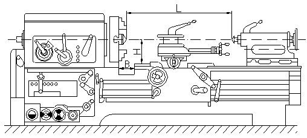
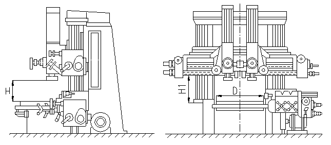

Токарный станок - станок для обработки преимущественно тел вращения путём снятия с них стружки при точении. Токарный станок — один из древнейших станков, на основе которого создавались станки сверлильной, расточной и др. групп. Токарные станки составляют значительную группу металлорежущих станков, отличаются большим разнообразием. На токарном станке можно выполнять различные виды токарной обработки: обтачивание цилиндрических, конических, фасонных поверхностей, подрезку торцов, отрезку, растачивание, а также сверление и развёртывание отверстий, нарезание резьбы и накатку рифлений, притирку и т.п. Используя специальные приспособления, на токарных станках можно осуществлять фрезерование, шлифование, нарезание зубьев и др. виды обработки. На специализированных токарных станках обрабатывают колёсные пары, муфты, трубы и др. изделия.
Основные узлы токарного станка: основание с корытом для сбора охлаждающей жидкости и стружки; станина с направляющими суппорта и задней бабки; неподвижная передняя бабка со шпинделем и коробкой скоростей, которая может располагаться и в др. месте, например в основании; передвижная задняя бабка, закрепляемая на станине в определённом положении; коробка подач, соединённая муфтами с ходовым валиком и ходовым винтом; фартук с механизмом передачи движения от ходового валика к рейке (или к винту подачи поперечных салазок и с механизмом соединения маточной гайки с ходовым винтом; суппорт, состоящий из каретки, движущейся по направляющим станины, поперечных салазок, перемещающихся по направляющим каретки; поворотная часть с направляющими для верхней каретки, несущей резцедержатель. Каретка и поперечные салазки перемещаются вручную или автоматически. В токарных станках некоторых моделей верхняя каретка также перемещается автоматически. В механизме фартука предусмотрена блокировка, исключающая одновременное включение подачи от ходового валика и ходового винта и одновременное включение каретки и поперечных салазок. Для быстрого хода суппорта служит дополнительный привод ходового валика от электродвигателя через обгонную муфту.
На токарных станках. в процессе резания вращение заготовки, закрепляемой в патроне зажимном или в центрах, осуществляется от привода главного движения, обеспечивающего ступенчатое или бесступенчатое регулирование частоты вращения шпинделя для настройки на требуемую скорость резания. Поступательное перемещение режущего инструмента обеспечивается кинематической цепью движения подачи, первое звено которой — шпиндель, последнее — зубчато-реечная передача (при точении) или кинематическая пара ходовой винт - маточная гайка (при нарезании резьбы). Настройка подачи производится с помощью коробки подач (при точении) или установкой сменных зубчатых колёс узла настройки подачи — гитары станка (при нарезании резьбы).
Шпиндельный узел выполняется жёстким и виброустойчивым. Опорами шпинделя обычно служат подшипники качения. В прецизионных токарных станках применяют гидростатические подшипники. На переднем конце шпинделя может устанавливаться планшайба или патрон, в которых закрепляют заготовки. Задняя бабка используется при обработке заготовок в центрах, а также для закрепления инструмента при сверлении, зенкеровании и развёртывании.
В привод главного движения токарных станков могут входить одно- или многоскоростной асинхронный электродвигатель и многоступенчатая коробка скоростей или механический вариатор либо регулируемый электродвигатель постоянного тока и коробка скоростей (обычно в тяжёлых токарных станках). Иногда в токарных станках применяют др. приводы (например, гидравлические).
Требования автоматизации мелкосерийного производства привели к развитию токарных станков с числовым программным управлением (ЧПУ). Эти станки имеют некоторые особенности. Наряду с традиционной применяется компоновка, при которой станина имеет наклонные направляющие, что облегчает удаление стружки и защиту рабочего пространства. Зона резания закрыта кожухами. Программируется: переключение скоростей шпинделя, продольные и поперечные перемещения суппорта с бесступенчатым регулированием подачи, быстрые перемещения суппорта, поворот револьверной головки, пуск, остановка и реверс привода главного движения, автоматическая смена инструмента (при наличии многоинструментального магазина). В некоторых центровых станках применяются самозажимные поводковые патроны и автоматизированные задние бабки. Во многих случаях станки имеют поворотные револьверные головки с индивидуальным электро- или гидроприводом. Подачи могут осуществляться от шаговых электродвигателей с гидроусилителями, двигателей постоянного тока, от гидродвигателей; применяют ходовые винты качения (шаровые). Инструменты налаживают вне станка с помощью оптических устройств или приспособлений для настройки резцов по индикаторам или шаблонам. На станке производят только смену и закрепление предварительно налаженных блоков или всего резцедержателя.
Универсальные токарные станки применяют в основном в условиях единичного и мелкосерийного производства. При оснащении токарных станков специальными приспособлениями (гидро- или электрокопировальными суппортами, быстрозажимными автоматизированными патронами и т.п.) область их применения распространяется на серийное производство. В массовом производстве применяют токарные и револьверные автоматы и полуавтоматы. Обслуживание автомата сводится к периодической наладке, подаче материала на станок и контролю обрабатываемых деталей. В полуавтомате не автоматизированы движения, связанные с загрузкой и снятием заготовок. Автоматическое управление рабочим циклом этих станков осуществляется с помощью распределительного вала, на котором установлены кулачки.
По принципу осуществления вспомогательных (холостых) движений автоматы и полуавтоматы можно разделить на 3 группы. Первая — станки, имеющие 1 распределительный вал, вращающийся с постоянной для данной настройки частотой; вал управляет рабочими и вспомогательными движениями. Эта схема применяется в автоматах малых размеров с небольшим числом холостых движений. Вторая группа — станки с 1 распределительным валом, имеющим 2 частоты вращения: малую при рабочих и большую при холостых операциях. Обычно эта схема применяется в многошпиндельных автоматах и полуавтоматах. Третья группа — станки, имеющие, кроме распределительного вала, быстроходный вспомогательный вал, осуществляющий холостые движения.
Карусельный станок - металлорежущий станок токарной группы, предназначенный для обработки изделий большой массы с относительно небольшой длиной l по сравнению с диаметром D (l /D < 1 для лёгких и средних и l /D < 0,5 для тяжёлых станков). На карусельных станках удобно устанавливать, выверять и закреплять изделия, поэтому они вытеснили лобовые станки, применявшиеся ранее. Отличительной особенностью карусельных станков является вертикальное расположение шпинделя. На его верхнем конце находится планшайба, на которой с помощью кулачков, имеющих радиальное перемещение, устанавливается и закрепляется обрабатываемое изделие. Изделие совершает главное вращательное движение, а инструмент, закрепленный на суппорте, — поступательное движение подачи. Шпиндель станка частично разгружен, т.к. массу изделия и силы резания воспринимают круговые направляющие планшайбы. Карусельные станки выпускаются одностоечные и двухстоечные, или портальные. Одностоечные карусельные станки обычно имеют вертикальный и боковой суппорты, двухстоечные — 2 вертикальных и 1 или 2 боковых. На одном из вертикальных суппортов часто устанавливают поворотную револьверную головку. Привод механизмов карусельных станков обычно осуществляется от нескольких, а у тяжёлых — от многих электродвигателей, которые во время обработки передают движение шпинделю с планшайбой, суппортам при их рабочих и холостых (ускоренных) движениях, а также служат для закрепления поперечины, включения тормоза и т.д.
На карусельных станках производят обтачивание и растачивание цилиндрических, конических и фасонных поверхностей, подрезку торцовых поверхностей, а на станках с револьверной головкой, кроме того, сверление, зенкерование и развёртывание. При наличии специальных приспособлений на карусельных станках можно также нарезать резьбу, производить долбление, фрезерование и шлифование. На карусельном станке можно вести многоинструментальную обработку, используя одновременно движения нескольких инструментов, установленных на разных суппортах, что позволяет значительно повысить производительность. Жёсткость конструкций карусельных станков допускает обработку уникальных массивных изделий с высокой степенью точности. Например, на тяжёлых двухстоечных карусельных станках обрабатывают изделия массой до 500 т и более с диаметром до 30 м (части мощных гидротурбин и турбогенераторов, детали атомных реакторов, синхрофазотронов и т.п.).